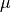

statsmodels.discrete.discrete_model.NegativeBinomial¶
-
class
statsmodels.discrete.discrete_model.NegativeBinomial(endog, exog, loglike_method='nb2', offset=None, exposure=None, missing='none', **kwargs)[source]¶ Negative Binomial Model for count data
Parameters: endog : array-like
1-d endogenous response variable. The dependent variable.
exog : array-like
A nobs x k array where nobs is the number of observations and k is the number of regressors. An intercept is not included by default and should be added by the user. See
statsmodels.tools.add_constant.loglike_method : string
Log-likelihood type. ‘nb2’,’nb1’, or ‘geometric’. Fitted value  Heterogeneity parameter
- nb2: Variance equal to
 (most common)
(most common) - nb1: Variance equal to
- geometric: Variance equal to
offset : array_like
Offset is added to the linear prediction with coefficient equal to 1.
exposure : array_like
Log(exposure) is added to the linear prediction with coefficient equal to 1.
missing : str
Available options are ‘none’, ‘drop’, and ‘raise’. If ‘none’, no nan checking is done. If ‘drop’, any observations with nans are dropped. If ‘raise’, an error is raised. Default is ‘none.’
References
References:
- Greene, W. 2008. “Functional forms for the negtive binomial model
- for count data”. Economics Letters. Volume 99, Number 3, pp.585-590.
- Hilbe, J.M. 2011. “Negative binomial regression”. Cambridge University
- Press.
Attributes
endog (array) A reference to the endogenous response variable exog (array) A reference to the exogenous design. Methods
cdf(X)The cumulative distribution function of the model. cov_params_func_l1(likelihood_model, xopt, ...)Computes cov_params on a reduced parameter space corresponding to the nonzero parameters resulting from the l1 regularized fit. fit([start_params, method, maxiter, ...])fit_regularized([start_params, method, ...])initialize()Initialize is called by statsmodels.model.LikelihoodModel.__init__ and should contain any preprocessing that needs to be done for a model. loglike(params)Loglikelihood for negative binomial model pdf(X)The probability density (mass) function of the model. predict(params[, exog, exposure, offset, linear])Predict response variable of a count model given exogenous variables. score_obs(params)Attributes
endog_namesexog_names- nb2: Variance equal to